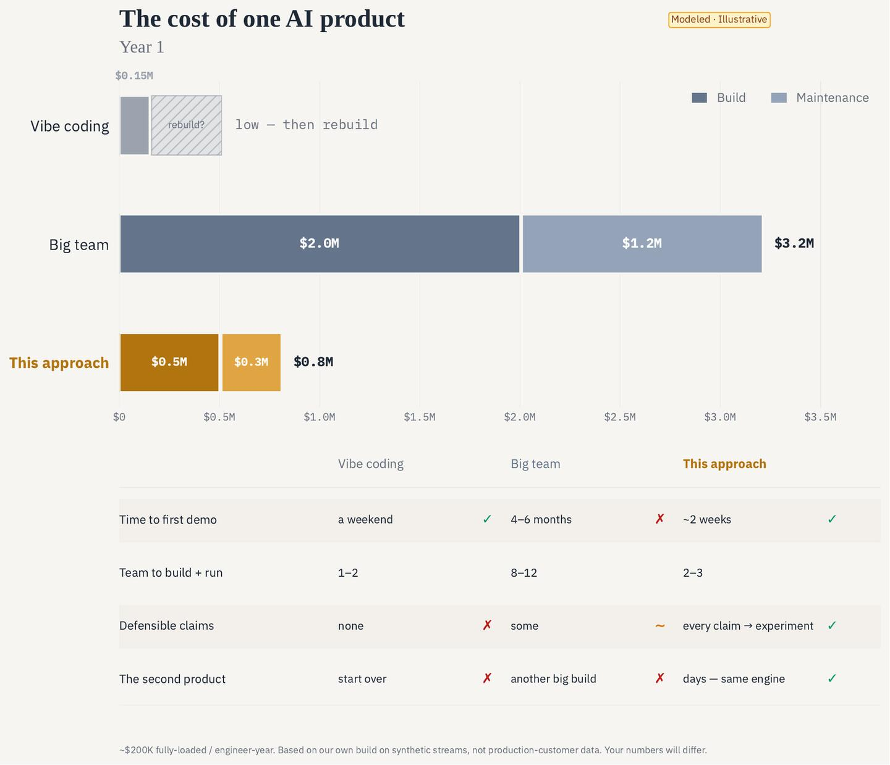
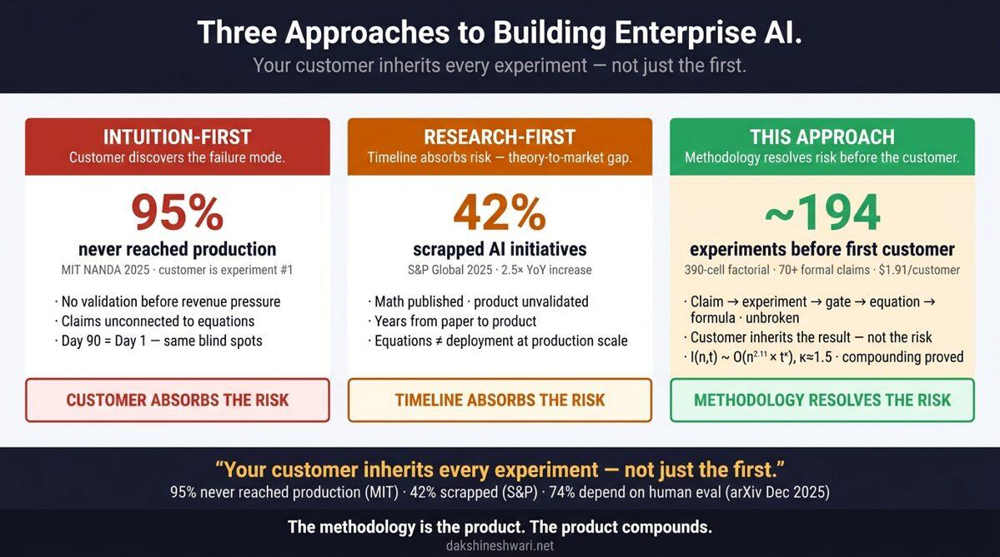
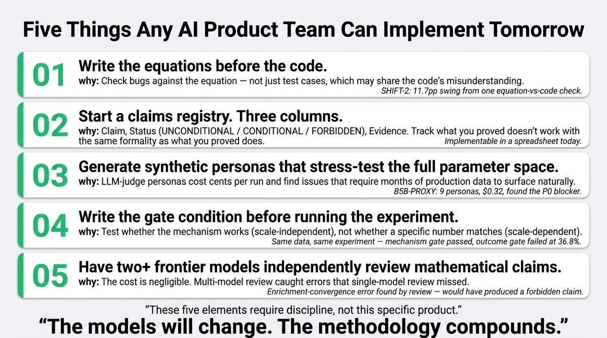
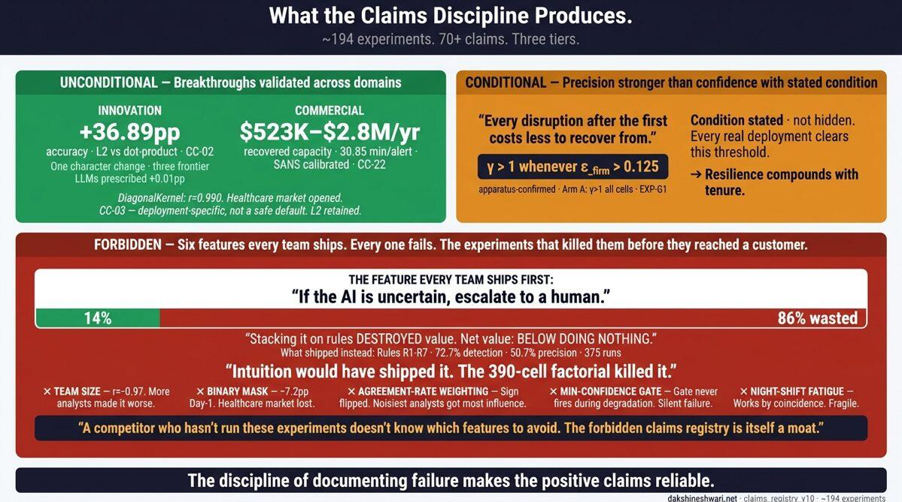
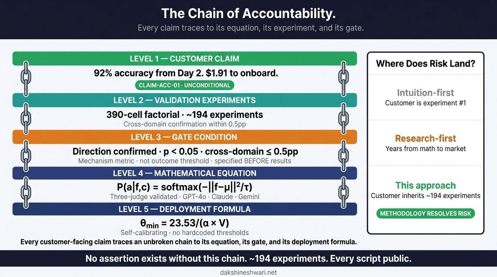
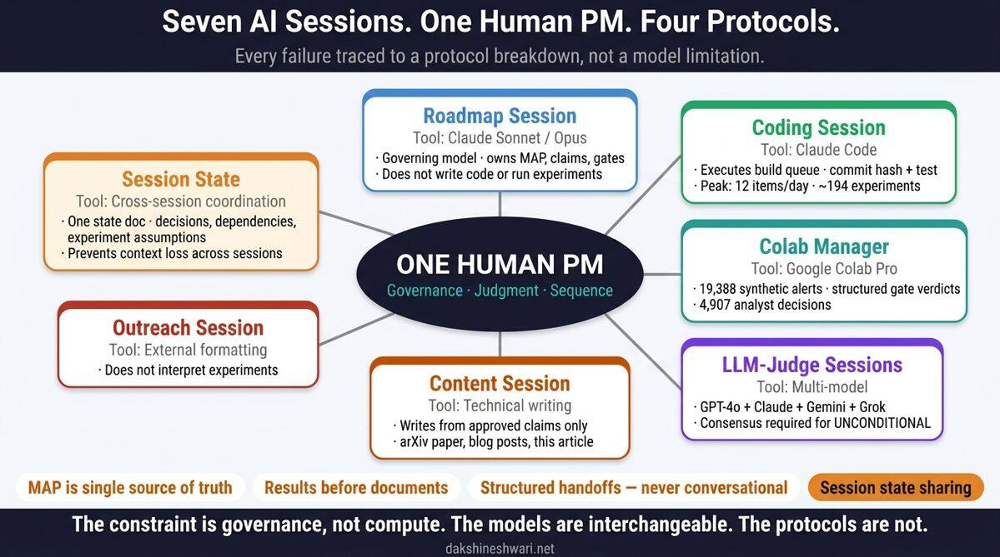

Your customer shouldn't be your first experiment.
Fast and seductive — a working demo in a weekend. Then the maintenance nightmare: code no one can reason about, claims you can't defend, a mechanism you can't trust — and the customer as your first real test.
Most of that speed — a working product in days, on a shared engine. Without the nightmare: a tested mechanism, a defensible claim set, and an engine you build the next product on. Built fast, built to keep.
That's the shift — most of the advantages of vibe coding, without the maintenance nightmare.
Vibe coding falls apart as the codebase grows — the agent loses the thread, and the nightmare sets in. Keeping coding agents productive on a large, evolving codebase is the hard, mostly-unsolved problem underneath that. Here's ours, as proof it can be done:
Built and maintained this way from the start. That combination — a shared engine plus coding agents that hold the whole codebase — is exactly what lets us move at vibe-coding speed without the vibe-coding debt.
The money in software just moved. The largest firms — AWS, Microsoft, and Oracle among them — are pouring capital into data centers and cutting development headcount by the thousands. Compute is the new capex, so every cost of building and running a product is under pressure. Here's what changed — and how this approach answers each.
ChangedA 20-person AI team is a luxury few can still justify.
Our answerThe engine plus coding agents that hold a large codebase let a small team do what used to need a large one.
ChangedAI-generated code becomes a maintenance nightmare; upkeep dominates the lifetime bill.
Our answerBuilt on a tested mechanism, a shared engine, and a claims registry — maintainable by design, not a growing liability.
ChangedEvery change can silently degrade an AI product; safe updates are slow and scary.
Our answerA fail-closed gate and mechanism tests mean updates can't silently regress; the system learns online, no retraining.
ChangedMonths to a first product, months per feature after.
Our answerDays, not months, for a new product on the engine — the hard parts are already built and reused.
ChangedOne bad AI call reaches a customer, a regulator, or your brand.
Our answerSynthetic validation and a claims registry make it defensible before it ships — the customer isn't the experiment.
ChangedBig teams carry big coordination overhead, and the knowledge walks out the door.
Our answerOne PM, a few reasoning systems, four protocols — and the operating system stays with your team.
The promise in one line: most of the speed of vibe coding, without the maintenance debt — at a fraction of a big team's cost. Here's the honest three-way comparison.

Vibe coding wins the first demo and loses everything after it; a big team wins defensibility at several times the cost.
The market is full of AI product agencies, fixed-price "AI sprint" shops, and pilot-to-production consultancies — most will de-risk a build and hand you an eval harness. Four things here are hard to find anywhere else.
| Most AI product shops | AI Product Engineering & Economics | |
|---|---|---|
| What you leave with | a bespoke, one-off build | a product and the engine that builds the next one — yours to keep |
| The second product | start from scratch again | days, on the same engine — your product line compounds |
| How far the proof goes | an eval harness + "known failure conditions" | math-first spec, oracle-separated synthetic validation, original results |
| The math for your mechanism | tune a model — no one derives it | we build the math for your product — a derived spec, then proven |
| What it's built around | de-risking the pilot, governance | the economics — a small team, a fraction of the cost |
| What it costs | "book a call, we'll propose" | posted: $1,500 review · $12,500 one-week sprint |
Category patterns as publicly described by AI product agencies and fixed-price AI-sprint firms; no competitor metrics asserted.
This isn't a promise — it's how we build. Five copilots — SOC, S2P, Trading, Purchasing, DataOps — run on one shared engine. A new copilot now takes days, not months, because the hard parts are already built and reused:
You get the same engine, not a one-off build. Assemble the blocks, add your domain, and your next product is days — not a restart. Your product line compounds instead of starting from zero each time. This is the leverage: one person built five products on this engine — a small team can ship defensible AI products without a big-team budget. That's Compounding Intelligence, turned on your own roadmap.
And no lock-in. The engine is GAE — Apache-2.0, pip-installable, no license fee and no hosted service: it's yours to keep and fork. The method, registry, and protocols stand on their own even if you never touch GAE again.
You're putting real money and your reputation on an AI product. The usual way to build it — code, demo, ship — turns your customer into the first real experiment. That's the bet we take off the table.

Equations precede code and serve as the spec — derived, not imported. The equation catches what the test suite misses.
Factorial design on architecture decisions. Mechanism gates, not outcome gates — so you learn why, not just whether.
A claims registry: every claim tiered and traceable. Synthetic validation at scale. Multi-model peer review catches the next forbidden claim.
Not capability-forward. Avoid the capability trap and the judge trap; define from the scenario the buyer actually has.
One PM, several reasoning systems, four protocols. The method is the product's own pattern — and the commercial moat.
The five moves connect into one traceable chain: every product claim walks back to the experiment that earned it.
None of it requires our specific product — it requires the discipline. Five things any AI product team can put to work tomorrow:

The obvious question for any pre-revenue method — am I your first experiment? No. Every mechanism is stress-tested on a synthetic harness before it ever sees your real data or a customer. That's how ~194 experiments (59 primary, 1,890 factorial cells) run before customer #1 — and why you're the beneficiary, not the test.
Synthetic data done naively lies. Let an LLM generate your test data and it smuggles in its own competence — you end up measuring the model's opinion, not your mechanism. We learned this the hard way; three frontier models confirmed it's a structural identifiability problem, not a prompt-engineering one.
Oracle separation: the model only proposes; a math oracle judges every answer against ground truth. The test measures your mechanism, not the model. And when synthetic can't settle a claim, we prove it analytically and stage the real measurement to the pilot — no claim ships on a number the method can't defend.
The lesson the process encodes: the biggest wins hide in the mechanism, where consensus intuition — human or model — doesn't look. You only find them if the math is the spec and the experiment tests the mechanism.
And it isn't a one-off flourish — the method runs on real math and a lot of experiments, and the derivations are public.
Every claim is tiered and traceable: breakthroughs validated across domains, claims that hold only under a stated condition, and the features that get killed before a customer sees them. Documenting what fails is what makes the positive claims reliable — and the forbidden registry is itself a moat.

No customer-facing claim stands alone. Each traces an unbroken chain down to its validation experiments, its gate condition, its equation, and its deployment formula.

The rigor holds because the workflow enforces it: a single human PM owns governance, judgment, and sequence; specialized reasoning systems do the work under four protocols. The constraint is governance, not compute — and that's what we leave behind with your team.

If you're buying a process to de-risk an AI product, here's what a careful buyer should demand of anyone — us included. We built the service to clear every bar.
Has it produced a working system — or just a deck of best practices?
Does the method transfer to your domain — or only theirs?
Will the capabilities hold up to a skeptical buyer, auditor, or board?
Do you own the method afterward — or depend on the provider forever?
Can you test the value before a big commitment?
Can you check the claims yourself, or only trust the pitch?
Most help gets you one piece — a model, a demo, a deck, a UX mock. To actually ship, you need all of it, and it has to hold together under scrutiny. You walk away with the whole package, each piece backed by an experiment.
Your core mechanism running on your own scenario — ready to put in front of customers, your board, or investors. Not a slide; a thing that runs.
The interface, screens, and flow — how your buyer actually experiences the product, designed alongside the mechanism, not bolted on after.
Sequenced from the first mechanism to a shipped product and the releases after — tied to buyer problems and to what the experiments have already cleared.
The derived math that is your product's spec and its defensibility — why it works, not just that it does. The part competitors can't reverse-engineer from a demo.
Your differentiation versus the alternatives — each one backed by a reproducible experiment, not a marketing line. It survives a skeptical buyer, auditor, or investor.
The product scoped from the scenario your buyer actually has — not from the capability you happened to build.
Proven, conditional, and forbidden — the discipline that makes every positive claim credible, and the forbidden list that is itself a moat.
The protocols and the method, so your team keeps shipping this way after we're gone. The capability doesn't leave with us.
This is the help a product-builder usually can't get in one place: a model vendor leaves you a capability, a design shop leaves you screens, a consultancy leaves you a deck. Here it arrives as one product — with the proof attached.
Free 30-min consult — what you're building and where the risk is. You leave with the experiment that would prove your core mechanism.
Mechanism review · $1,500 · within a week — a focused written review of one mechanism: the experiment to run, what it would prove, and whether a sprint is worth it. A fraction of a full engagement — priced to be an easy yes.
Mechanism sprint · 1 week · $12,500 fixed — the mechanism formulated as math, the first experiment on a synthetic harness, and your first claims-registry entries.
Working demo · 2 weeks — a running demo on your scenario, the experiment suite, and a defensible claim set you can show a customer or board.
Product pilot · 6–8 weeks · scoped after the sprint — the full mechanism through the chain: demo, front-end, roadmap, claims registry — plus the engine set up for your next product.
Fixed-scope, fixed-fee, billed at $250/hr (10-hour days); later steps run only if the one before earns it. The entry is low because the engine does the heavy lifting, not because the work is — a comparable PoC elsewhere runs $15–40K over 3–6 weeks.
dakshineshwari.net · Arindam Banerji, PhD · banerji.arindam@gmail.com
The CI platform is new, but the track record isn't. A few notes on products Arindam led to market earlier — at HP, CSC / Microsoft, and Infosys.
“HP's e-Speak is the universal compiler and translator … the Rosetta stone of the brave new everything-networked world. I repeat … e-Speak is universal. It is pure HP.”
“CSC's IML solution harnesses the power of the cloud with Microsoft Azure and advanced analytics … companies can take data that had previously been overlooked and give it real business value.”
“Infosys and Microsoft, poised to capture the supply-visibility and collaboration opportunity.”